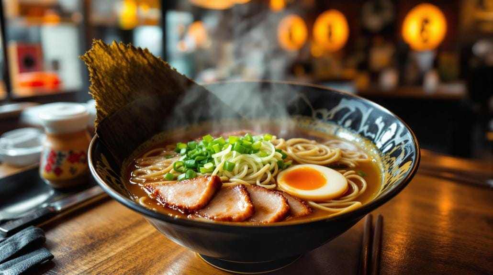
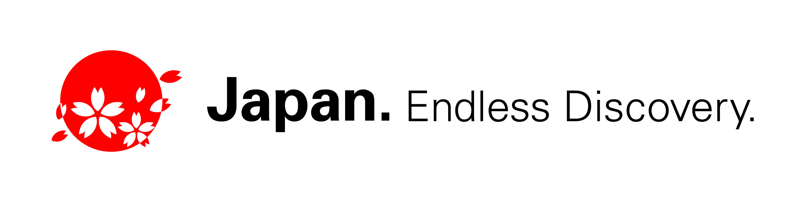
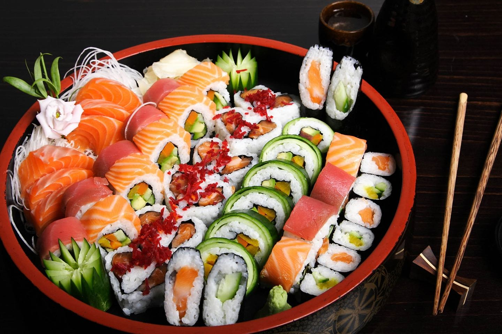
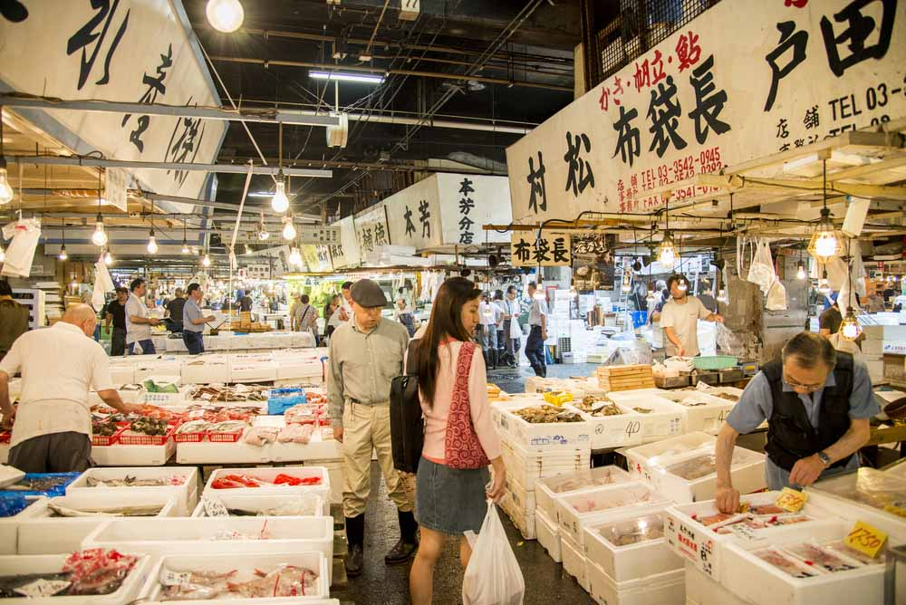

Dónde Comer
En este buscador, vas a poder filtrar por nombre, tipo de establecimiento y por barrio
ver más

En este buscador, vas a poder filtrar por nombre, tipo de establecimiento y por barrio
ver más
En Tokio vas a encontrar platos típicos y comida tradicional de todo Japón
ver más
Conocé los mercados e izakayas en donde podés disfrutar de la mejor gastronomía de la ciudad
ver más